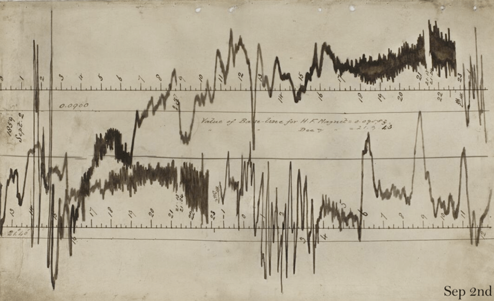
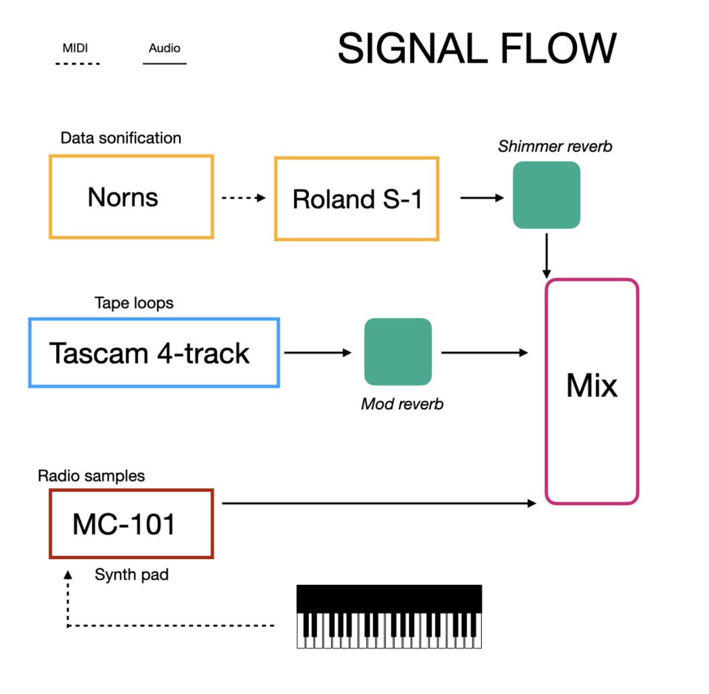
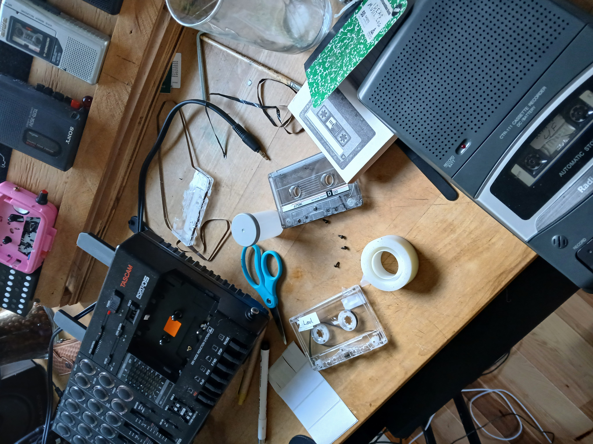
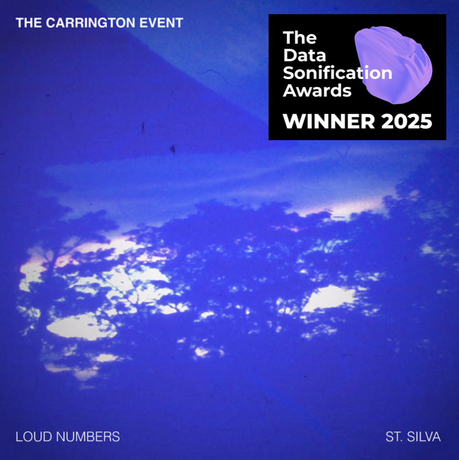

RESPONSIBILITIES
sound design, data sonification, composition
ABOUT
"The Carrington Event" is a an award-winning data sonification of the largest solar storm on record. In 1859, the Sun emitted a huge ball of plasma that struck the Earth, causing widespread disruption to telegraph systems and creating beautiful auroras. Scientists at the time logged the peaks of the event on graph paper. Over 150 years later, this data was translated into a unique sound experience that explores the relationship between solar activity and the Earth's magnetic field.

This project started as a collaboration with friend and fellow data sonifyer Duncan Geere. We had been discussing sonification for years now, and were eager to explore how the practice could play out in a live performance environment. While we both find data sonification fascinating, we also lamented about the proverbial "guy hunched over a computer" which is a frequent phenomena in the field of electronic computer music. So we set out to create a unique performance that would very much depend on human intervention, interpretation, and expression.
We each started with the same dataset chronicling the rise and fall of storm declination, horizontal force, and storm strength throughout the Carrington Event. After that, we each decided on our unique tools and instruments to express this data. For my part, I wanted to lean into the very old nature of this event, incorporating old radio recordings and warbly textures. I also used a Tascam cassette deck as a central instrument, crafting tape loops to introduce textures at different moments of the performance. You can read a full write-up on our process at Duncan's website.
Each musician performed their interpretation of the data at different locations in Vermont and Malmo, Sweden, respectively. Afterwards, we recorded a take of our performances, which was published on the French net label Camembert Electrique. I was also very pleased to receive a Data Sonification Award for the piece in the field of Astronomy.
You can watch my full live performance at the Vimeo link, or read more about the project here.
Read more